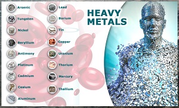
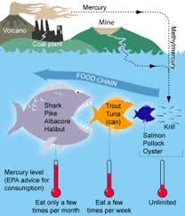
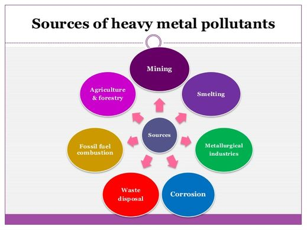
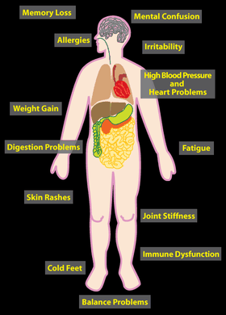

What are Heavy Metals?
"Heavy metals" is a term for elements in the periodic table who have a high density and oftentimes are toxic to humans. Many of these substances naturally in the earth, so there is virtually no way to get rid of them. Some of these substances are beneficial to humans such as copper but many others such as lead and mercury can potentially kill humans. Despite the fact that these substances occur naturally on Earth, pollution caused by humans increases the amount of exposure in the environment and increases the risks of being injured by these substances.
Where Heavy Metals are Found
Lead is the most prevalent of the heavy metals. In general, heavy metals can be found in the air, water, and ground. Recently, there have been many stories in the news recently about levels of lead in water being very high and unsafe. Lead can also be found in paints, fertilizers, and more. Mercury, another heavy metal, is commonly found in many everyday items such as thermometers, batteries, and even certain types of lamps. Another place mercury is found is in many types of seafood. Another very common heavy metal is aluminium. This can be found in many antiperspirants and in cans.
   

Prevention and Protection
Because heavy metals exist pretty much everywhere in the world, it is very difficult to limit your exposure to these types of things. If you are aware of things in your life that include these types of substances, you can help protect yourself from harm due to exposure from these things. Even when you are aware of this type of exposure, if you cleanse your body often you will have a better chance of keeping these types of metals far away from your body.
Effects on Humans
The effect of almost all heavy metals for humans is negative. Chrominium, one of the many heavy metals, can cause kidney and liver damage and problems with your GI tract. Another common heavy metal, lead, has been well known to poison people through exposure. It is believed that lead causes minor neuropsychological problems in the brains of young children. Mercury is known as one of the most dangerous heavy metals. Mercury poisoning is known to cause gingivitis and can seriously harm pregnant mothers.